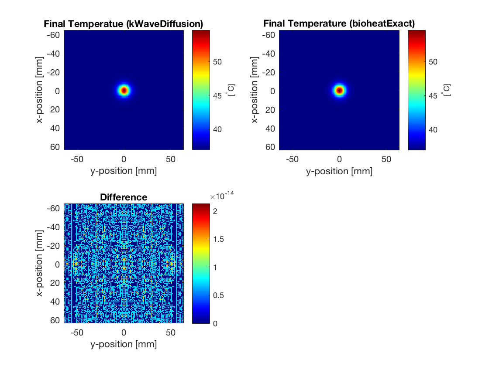

Constant Rate Of Heat Deposition
This example provides a simple demonstration of using k-Wave to model the diffusion of heat within a two-dimensional homogeneous medium with a constant source term (volume rate of heat deposition). It builds on the Heat Diffusion In A Homogeneous Medium example.
Contents
Defining the medium properties
In the Heat Diffusion In A Homogeneous Medium Example, only the parameters related to diffusion are defined. Here, the parameters related to tissue perfusion are also specified. Similar to the diffusion parameters, these can be defined in two ways, either by defining a single perfusion coefficient (assigned to medium.perfusion_coeff), or by defining the density, specific heat capacity, and perfusion rate of the blood (assigned to medium.blood_density, medium.blood_specific_heat, and medium.blood_perfusion_rate). In both cases, the ambient temperature of the blood must be defined (assigned to medium.blood_ambient_temperature). These parameters can be specified as single scalar values in SI units (for homogeneous coefficients), or as matrices the same size as the computational grid (for heterogeneous coefficients). In this example, the individual medium properties are set as scalar values.
% define medium properties related to diffusion medium.density = 1079; % [kg/m^3] medium.thermal_conductivity = 0.52; % [W/(m.K)] medium.specific_heat = 3540; % [J/(kg.K)] % define medium properties related to perfusion medium.blood_density = 1060; % [kg/m^3] medium.blood_specific_heat = 3617; % [J/(kg.K)] medium.blood_perfusion_rate = 0.01; % [1/s] medium.blood_ambient_temperature = 37; % [degC]
Defining the heat source term
In this example, the initial temperature is set to body temperature, and a volume heat source term (defined in units of W/m^3) is set to be a Gaussian distribution. The simulation is then performed by calling the takeTimeStep method.
% set initial temperature distribution to be constant [degC] source.T0 = 37; % set Gaussian volume rate of heat deposition [W/m^3] width = 4*dx; source.Q = 2e6 .* exp( -(kgrid.x ./ width).^2 - (kgrid.y ./ width).^2 );
Calculating thermal dose
During the simulation, the thermal dose delivered to the tissue is automatically calculated in units of cumulative equivalent minutes. This is calculated using the formula cem43 = cem43 + dt/60 * R ^(43 - T), where dt is the size of the time step in seconds. The parameter R is given by 0.5 if the temperature T is above 43 degrees Celsius, and 0.25 if it is below (the difference in slope below 43 is due to the development of thermo-tolerance during heating). The dependence on dt means that if the temperature is rapidly changing, using a smaller time step will give a more accurate estimate of the thermal dose. The thermal dose can be accessed from an object of the kWaveDiffusion class using the dynamic property kdiff.cem43. A thresholded lesion map where cem43 exceeds 240 cumulative equivalent minutes can also be returned using the property kdiff.lesion_map. These are plotted below. The total size of the lesion can also be returned using the property kdiff.lesion_size. This is given in units of distance in 1D [m], area in 2D [m^2], and volume in 3D [m^3].
Comparison with exact solution
For a constant source term, when the medium is homogeneous, the computation by kWaveDiffusion is again exact and unconditionally stable. In this case, the calculations using kWaveDiffusion and bioheatExact agree to machine precision.
% calculate perfusion coefficient from the medium parameters P = medium.blood_density .* medium.blood_perfusion_rate .* ... medium.blood_specific_heat ./ (medium.density .* medium.specific_heat); % calculate diffusivity from the medium parameters D = medium.thermal_conductivity / (medium.density * medium.specific_heat); % calculate normalised heat source S = source.Q ./ (medium.density .* medium.specific_heat); % compute Green's function solution using bioheatExact T_exact = bioheatExact(source.T0 .* ones(Nx, Ny), S, ... [D, P, medium.blood_ambient_temperature], kgrid.dx, Nt * dt);